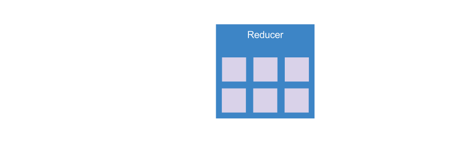

Tour Of Heroes - NgRx
Jesse Sanders
@JesseS_BrieBug
jesse.sanders@briebug.com
@JesseS_BrieBug
jesse.sanders@briebug.com
Overview
- What is NgRx and why would I use it?
- Installing NgRx
- NgRx basic concepts
- Planning the upgrade
- Create TOH state store
What is NgRx
- Actions
- Reducers
- Effects
- Selectors
Why NgRx?
NgRx Packages
- @ngrx/store
- @ngrx/effects
- @ngrx/entity
- @ngrx/router-store
Optional/Dev-only NgRx Packages
- @ngrx/store-devtools
- ngrx-store-freeze
- @ngrx/schematics
NgRx Installation
# Required Packages
npm install --save @ngrx/{store,effects,entity,router-store}
# Optional Packages
npm install --save-dev @ngrx/{store-devtools,schematics} ngrx-store-freeze
# .angular.cli.json - set schematics default
"defaults": {
"schematics": {
"collection": "@ngrx/schematics"
}
}
Create NgRx structure
- Create state folder in ./src/app
- Add folder for Hero entity
Create Hero Entity
mkdir src/app/state/heroes
touch src/app/state/heroes/heroes.actions.ts
touch src/app/state/heroes/heroes.effects.ts
touch src/app/state/heroes/heroes.reducers.ts
touch src/app/state/heroes/index.ts
Create Hero Entity using CLI
cd src/app/state
ng g en Hero --flat false
NgRx Schematics will create our files for us
Planning for Actions
Transactional state model
Actions
- Create ActionTypes enum
- Create Action classes - type checked payloads
- Export a type (union of all Action classes)
Transactional state model
Reducer
The reducer is responsible for managing the state- Array vs Dictionary data
- @ngrx/entity
- Pure functions that compute new state
NgRx Entity
- Entity State
- EntityAdapter
- Adding app state properties, e.g., loading, error, etc.
Selectors
- If the store is like a database, selectors are like queries
- Composable using createSelector
- Memoized for speed
- Adapter has 4 base selectors
Effects
- Effects handle async operations
- Watch dispatched actions and act accordingly
- Usually call a service and return a new action once data is returned
- Errors result in a new action (Error is a new state)
Simple Wireup
- Import all reducers and effects into app.module
- Register reducers and effects
app.interfaces
- Create app level state
- Single import for App State into components
app.reducer
- Creates an app level action reducer map
- Active store freeze in non production envs
store.module
- Reduce clutter in app.module
- Registers effects and reducers
- Setup instrumentation
- RouterStateSerializer
app.module
- Single import for store state
Redux Dev Tools
- Inspect current and past states
- Step through each state - time travel
Dashboard Refactor
- Replace service calls with dispatching actions to the store
- Dispatch LoadHeros Action
- Use selectors to get data from store
BrieBug - What We do
- Angular Training
- Architecture Reviews
- Angular Consulting